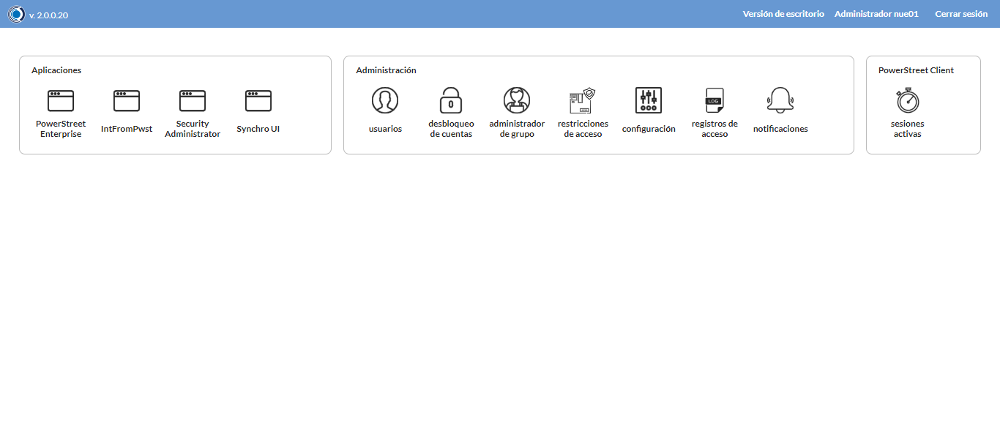

Desarrollado por : Area de Testing PWST
Fecha y hora de inicio : 2022-08-24 11:55:01
Duracion : 0:12:27.054458
Resultado : Total 8，Correctos 7 ，Errores 1 ，Taza de resultado 87.50%
Resumen 87.50% Errores 1 Fallidos 0 Correctos 7 Test realizados 8
| Caso de Prueba | Total | Correctos | Fallido | Error | Detalles | Captura del error |
| PerfilesMoviles.Test: Escenario 1 de Perfiles Moviles | 8 | 7 | 0 | 1 | Detalles | |
test |
pt1_1: 2022-08-24 11:55:03,262 - root - INFO - Se abre el chrome
2022-08-24 11:55:07,310 - root - INFO - Entra a la URL
2022-08-24 11:55:07,443 - root - INFO - Maximiza la pantalla
2022-08-24 11:55:10,499 - root - INFO - Cambia al frame
|
|
||||
test_000: Ingresa a la base de datos |
pt1_2: 2022-08-24 11:55:13,609 - root - INFO - Escribe el usuario
2022-08-24 11:55:13,749 - root - INFO - Escribe la contraseña
2022-08-24 11:55:13,908 - root - INFO - Se dio clic en el boton ingresar
2022-08-24 11:55:16,929 - root - INFO - Ejecutar Enterprise
2022-08-24 11:55:16,930 - root - INFO - Captura: C:\xampp\htdocs\versiones\automatizaciones\AutoPWST\01PM\report\img screen：20220824_11_55_16.png
2022-08-24 11:55:21,263 - root - INFO - Cambia entre pestañas
|
 | ||||
test_001: Abre menu y ejecuta pantalla |
pt1_3: 2022-08-24 11:55:44,198 - root - INFO - Abre el menu completo
2022-08-24 11:56:01,131 - root - INFO - Abre la pantalla de Perfiles Moviles
2022-08-24 11:56:01,184 - root - INFO - La pantalla ejecutada es Perfiles Moviles
2022-08-24 11:56:04,192 - root - INFO - Captura: C:\xampp\htdocs\versiones\automatizaciones\AutoPWST\01PM\report\img screen：20220824_11_56_04.png
2022-08-24 11:56:04,378 - root - INFO - Se presiona el boton 'Nuevo', para crear un nuevo registro.
|

|
||||
test_002: Abre la ventana de nuevo y crear un registro |
pt1_4: 2022-08-24 11:56:09,447 - root - INFO - Se abrio la pantalla para el ingreso de un registro nuevo.
2022-08-24 11:56:09,490 - root - INFO - El campo 'Código' si se encuentra visible.
2022-08-24 11:56:09,538 - root - INFO - El campo 'Descripción' si se encuentra visible.
2022-08-24 11:56:09,580 - root - INFO - El campo 'Cargar rutas' si se encuentra visible.
2022-08-24 11:56:09,620 - root - INFO - El campo 'Tipo documento default' si se encuentra visible.
2022-08-24 11:56:09,661 - root - INFO - El campo 'Modo carga liquidación' si se encuentra visible.
2022-08-24 11:56:09,704 - root - INFO - El campo 'Modo descarga HH' si se encuentra visible.
2022-08-24 11:56:09,748 - root - INFO - El campo 'Modo PDV' si se encuentra visible.
2022-08-24 11:56:09,788 - root - INFO - El campo 'Registrar coordenadas GPS' si se encuentra visible.
2022-08-24 11:56:09,830 - root - INFO - El campo 'Fin Automático de visita cuando inicio es' si se encuentra visible.
2022-08-24 11:56:09,870 - root - INFO - El campo 'Intervalo lectura coordenadas GPS(min)' si se encuentra visible.
2022-08-24 11:56:09,960 - root - INFO - Ingresa el codigo del nuevo registro
2022-08-24 11:56:13,131 - root - INFO - Ingresa la Descripcion del nuevo registro
2022-08-24 11:56:24,540 - root - INFO - Se selecciono el registro de Cargar Rutas
2022-08-24 11:56:27,667 - root - INFO - Ingresa el Tipo documento default del nuevo registro
2022-08-24 11:56:42,688 - root - INFO - Se selecciono el registro de Tipo documento default
2022-08-24 11:56:54,091 - root - INFO - Se selecciono el registro de Modo carga liquidación
2022-08-24 11:57:05,507 - root - INFO - Se selecciono el registro de Modo descarga HH
2022-08-24 11:57:08,608 - root - INFO - Se dió click en el campo Modo PDV
2022-08-24 11:57:11,708 - root - INFO - Se dió click en el campo Registrar coordenadas GPS
2022-08-24 11:57:23,099 - root - INFO - Se selecciono el registro de Fin Automático de visita cuando inicio es
2022-08-24 11:57:26,203 - root - INFO - Ingresa el Intervalo lectura coordenadas GPS(min) del nuevo registro
2022-08-24 11:57:29,215 - root - INFO - Captura: C:\xampp\htdocs\versiones\automatizaciones\AutoPWST\01PM\report\img screen：20220824_11_57_29.png
2022-08-24 11:57:32,505 - root - INFO - Se hace el cambio de pestaña Varios para continuar con el registro nuevo
2022-08-24 11:57:37,560 - root - INFO - El campo 'Cargar resumen de cuentas únicamente del vendedor de la ruta' si se encuentra visible.
2022-08-24 11:57:37,604 - root - INFO - El campo 'Verificar límite de crédito' si se encuentra visible.
2022-08-24 11:57:37,650 - root - INFO - El campo 'Verificar opción guardar como' del tipo de documento' si se encuentra visible.
2022-08-24 11:57:37,691 - root - INFO - El campo 'Permitir pagos a cuenta en cancelaciones' si se encuentra visible.
2022-08-24 11:57:37,732 - root - INFO - El campo 'Disco de datos (WorkAbout)' si se encuentra visible.
2022-08-24 11:57:37,774 - root - INFO - El campo 'Tipo de Vendedor' si se encuentra visible.
2022-08-24 11:57:37,815 - root - INFO - El campo 'Enviar documentos de inmediato al servidor.' si se encuentra visible.
2022-08-24 11:57:37,899 - root - INFO - Se dió click en el campo Cargar resumen de cuentas únicamente del vendedor de la ruta
2022-08-24 11:57:41,009 - root - INFO - Se dió click en el campo Verificar límite de crédito
2022-08-24 11:57:44,087 - root - INFO - Se dió click en el campo Verificar opción 'guardar como' del tipo de documento
2022-08-24 11:57:47,178 - root - INFO - Se dió click en el campo Permitir Pagos
2022-08-24 11:58:08,697 - root - INFO - Se selecciono el registro de Disco de Datos
2022-08-24 11:58:20,082 - root - INFO - Se selecciono el registro de Tipo de Vendedor
2022-08-24 11:58:23,176 - root - INFO - Se dió click en el campo Enviar documentos de inmediato al servidor.
2022-08-24 11:58:26,256 - root - INFO - Se hace el cambio de pestaña Permisos para continuar con el registro nuevo
2022-08-24 11:58:31,369 - root - INFO - Se presiona el boton 'Nuevo de la pestaña Permiso' , para crear un nuevo registro.
2022-08-24 11:58:36,426 - root - INFO - El campo 'Permisos' si se encuentra visible.
2022-08-24 11:58:44,864 - root - INFO - Se selecciono el registro de Permisos
2022-08-24 11:58:47,961 - root - INFO - Se presiona el boton 'Guardar de la pestaña Permiso', para guardar el registro.
2022-08-24 11:58:53,048 - root - INFO - Se hace el cambio de pestaña Lineas de Negocio para continuar con el registro nuevo
2022-08-24 11:58:58,159 - root - INFO - Se presiona el boton 'Nuevo de la pestaña Permiso' , para crear un nuevo registro.
2022-08-24 11:59:03,227 - root - INFO - El campo 'Línea negocio' si se encuentra visible.
2022-08-24 11:59:11,657 - root - INFO - Se selecciono el registro de Linea de negocio
2022-08-24 11:59:14,733 - root - INFO - Se presiona el boton 'Guardar de la pestaña Linea de Negocio', para guardar el registro.
2022-08-24 11:59:19,825 - root - INFO - Se presiona el boton 'Nuevo de la pestaña Permiso' , para crear un nuevo registro.
2022-08-24 11:59:33,305 - root - INFO - Se selecciono el registro de Linea de negocio
2022-08-24 11:59:36,385 - root - INFO - Se presiona el boton 'Guardar de la pestaña Linea de Negocio', para guardar el registro.
2022-08-24 11:59:41,459 - root - INFO - Se presiona el boton 'Nuevo de la pestaña Permiso' , para crear un nuevo registro.
2022-08-24 11:59:54,889 - root - INFO - Se selecciono el registro de Linea de negocio
2022-08-24 11:59:57,966 - root - INFO - Se presiona el boton 'Guardar de la pestaña Linea de Negocio', para guardar el registro.
2022-08-24 12:00:03,072 - root - INFO - Se hace el cambio de pestaña Impulso Ventas para continuar con el registro nuevo
2022-08-24 12:00:08,181 - root - INFO - Se presiona el boton 'Nuevo de la pestaña Impulso de Ventas' , para crear un nuevo registro.
2022-08-24 12:00:13,250 - root - INFO - El campo 'Artículo' si se encuentra visible.
2022-08-24 12:00:13,345 - root - INFO - Ingresa el Articulo del nuevo registro
2022-08-24 12:00:19,570 - root - INFO - Se presiona el boton 'Guardar de la pestaña Impulso de Ventas', para guardar el registro.
2022-08-24 12:00:24,680 - root - INFO - Se presiona el boton 'Nuevo de la pestaña Impulso de Ventas' , para crear un nuevo registro.
2022-08-24 12:00:29,789 - root - INFO - Ingresa el Articulo del nuevo registro
2022-08-24 12:00:35,923 - root - INFO - Se presiona el boton 'Guardar de la pestaña Impulso de Ventas', para guardar el registro.
2022-08-24 12:00:41,015 - root - INFO - Se presiona el boton 'Nuevo de la pestaña Impulso de Ventas' , para crear un nuevo registro.
2022-08-24 12:00:46,128 - root - INFO - Ingresa el Articulo del nuevo registro
2022-08-24 12:00:52,268 - root - INFO - Se presiona el boton 'Guardar de la pestaña Impulso de Ventas', para guardar el registro.
2022-08-24 12:00:57,349 - root - INFO - Se presiona el boton 'Nuevo de la pestaña Impulso de Ventas' , para crear un nuevo registro.
2022-08-24 12:01:02,450 - root - INFO - Ingresa el Articulo del nuevo registro
2022-08-24 12:01:08,582 - root - INFO - Se presiona el boton 'Guardar de la pestaña Impulso de Ventas', para guardar el registro.
2022-08-24 12:01:13,649 - root - INFO - Se presiona el boton 'Nuevo de la pestaña Impulso de Ventas' , para crear un nuevo registro.
2022-08-24 12:01:18,745 - root - INFO - Ingresa el Articulo del nuevo registro
2022-08-24 12:01:24,887 - root - INFO - Se presiona el boton 'Guardar de la pestaña Impulso de Ventas', para guardar el registro.
2022-08-24 12:01:29,981 - root - INFO - Se hace el cambio de pestaña Mantenimiento Clientes para continuar con el registro nuevo
2022-08-24 12:01:35,026 - root - INFO - El campo 'Permiso agregar nuevos clientes' si se encuentra visible.
2022-08-24 12:01:35,070 - root - INFO - El campo 'Permiso modificar clientes existentes' si se encuentra visible.
2022-08-24 12:01:35,115 - root - INFO - El campo 'Ruta referencia' si se encuentra visible.
2022-08-24 12:01:35,208 - root - INFO - Se dió click en el campo Permiso agregar nuevos clientes
2022-08-24 12:01:38,304 - root - INFO - Se dió click en el campo Permiso modificar clientes existentes
2022-08-24 12:01:49,744 - root - INFO - Se selecciono el registro de Ruta Referencia
2022-08-24 12:01:52,899 - root - INFO - Se dió click en el campo Clasificación 1
2022-08-24 12:01:56,015 - root - INFO - Se dió click en el campo Clasificación 2
2022-08-24 12:01:59,142 - root - INFO - Se dió click en el campo Clasificación 3
2022-08-24 12:02:02,264 - root - INFO - Se dió click en el campo Colonia
2022-08-24 12:02:05,413 - root - INFO - Se dió click en el campo Codigo Postal
2022-08-24 12:02:08,569 - root - INFO - Se dió click en el campo Direccion
2022-08-24 12:02:11,699 - root - INFO - Se dió click en el campo Entorno PDV
2022-08-24 12:02:14,833 - root - INFO - Se dió click en el campo Esquina 1
2022-08-24 12:02:17,964 - root - INFO - Se dió click en el campo Esquina 2
2022-08-24 12:02:21,093 - root - INFO - Se dió click en el campo Paises
2022-08-24 12:02:24,237 - root - INFO - Se dió click en el campo Departamento
2022-08-24 12:02:27,358 - root - INFO - Se dió click en el campo Localidad
2022-08-24 12:02:30,474 - root - INFO - Se da clic en el boton Guardar; se debe crear un nuevo registro.
|

|
||||
test_003: Repite el Registro |
pt1_5: 2022-08-24 12:02:35,614 - root - INFO - Se presiona el boton 'Refrescar', para crear un nuevo registro igual al anterior.
2022-08-24 12:02:40,705 - root - INFO - Se presiona el boton 'Nuevo', para crear un nuevo registro igual al anterior.
2022-08-24 12:02:48,751 - root - INFO - Se abrio la pantalla para el ingreso de un registro nuevo.
2022-08-24 12:02:48,835 - root - INFO - Ingresa el codigo del nuevo registro
2022-08-24 12:02:51,990 - root - INFO - Ingresa la Descripcion del nuevo registro
2022-08-24 12:03:03,386 - root - INFO - Se selecciono el registro de Cargar Rutas
2022-08-24 12:03:06,502 - root - INFO - Ingresa el Tipo documento default del nuevo registro
2022-08-24 12:03:21,512 - root - INFO - Se selecciono el registro de Tipo documento default
2022-08-24 12:03:32,902 - root - INFO - Se selecciono el registro de Modo carga liquidación
2022-08-24 12:03:44,321 - root - INFO - Se selecciono el registro de Modo descarga HH
2022-08-24 12:03:47,429 - root - INFO - Se dió click en el campo Modo PDV
2022-08-24 12:03:50,514 - root - INFO - Se dió click en el campo Registrar coordenadas GPS
2022-08-24 12:04:01,905 - root - INFO - Se selecciono el registro de Fin Automático de visita cuando inicio es
2022-08-24 12:04:04,996 - root - INFO - Ingresa el Intervalo lectura coordenadas GPS(min) del nuevo registro
2022-08-24 12:04:11,095 - root - INFO - Se da clic en el boton Guardar; se debe crear un nuevo registro.
2022-08-24 12:04:18,152 - root - INFO - Captura: C:\xampp\htdocs\versiones\automatizaciones\AutoPWST\01PM\report\img screen：20220824_12_04_18.png
2022-08-24 12:04:18,664 - root - INFO - Se presiona el boton 'Cerrar', para cerrar el mensaje de duplicidad de llave primaria
2022-08-24 12:04:23,782 - root - INFO - Se presiona el boton 'Cerrar', para cerrar la ventana
|
|||||
test_004: Modificar el registro |
pt1_6: 2022-08-24 12:04:32,902 - root - INFO - Se presiona el boton 'Refrescar', para crear un nuevo registro igual al anterior.
2022-08-24 12:04:37,491 - root - INFO - Se da clic en el registro creado, para proceder a modificarlo.
2022-08-24 12:04:42,694 - root - INFO - Ingresa la Descripcion del nuevo registro
2022-08-24 12:04:54,099 - root - INFO - Se selecciono el registro de Cargar Rutas
2022-08-24 12:04:57,114 - root - INFO - Captura: C:\xampp\htdocs\versiones\automatizaciones\AutoPWST\01PM\report\img screen：20220824_12_04_57.png
2022-08-24 12:04:57,349 - root - INFO - Se hace el cambio de pestaña Permisos para continuar con el registro nuevo
2022-08-24 12:05:02,454 - root - INFO - Se presiona el boton 'Nuevo de la pestaña Permiso' , para crear un nuevo registro.
2022-08-24 12:05:15,858 - root - INFO - Se selecciono el registro de Permisos
2022-08-24 12:05:18,939 - root - INFO - Se presiona el boton 'Guardar de la pestaña Permiso', para guardar el registro.
2022-08-24 12:05:24,037 - root - INFO - Se hace el cambio de pestaña Impulso Ventas para continuar con el registro nuevo
2022-08-24 12:05:33,621 - root - INFO - Se da clic en el registro creado, para proceder a modificarlo.
2022-08-24 12:05:41,717 - root - INFO - Se presiona el boton 'Eliminar de Impulso Ventas', para eliminar el registro.
2022-08-24 12:05:46,307 - root - INFO - Se da clic en el registro creado, para proceder a modificarlo.
2022-08-24 12:05:54,414 - root - INFO - Se presiona el boton 'Eliminar de Impulso Ventas', para eliminar el registro.
2022-08-24 12:05:59,023 - root - INFO - Se da clic en el registro creado, para proceder a modificarlo.
2022-08-24 12:06:07,115 - root - INFO - Se presiona el boton 'Eliminar de Impulso Ventas', para eliminar el registro.
2022-08-24 12:06:11,697 - root - INFO - Se da clic en el registro creado, para proceder a modificarlo.
2022-08-24 12:06:19,771 - root - INFO - Se presiona el boton 'Eliminar de Impulso Ventas', para eliminar el registro.
2022-08-24 12:06:24,342 - root - INFO - Se da clic en el registro creado, para proceder a modificarlo.
2022-08-24 12:06:32,449 - root - INFO - Se presiona el boton 'Eliminar de Impulso Ventas', para eliminar el registro.
2022-08-24 12:06:32,526 - root - INFO - Se da clic en el boton Guardar; se debe modificar la informacion del registro.
|
|||||
test_005: Eliminar el registro creado |
ft1_7: 2022-08-24 12:06:37,594 - root - INFO - Se presiona el boton 'Refrescar', para proceder a eliminar el registro.
2022-08-24 12:06:47,196 - root - INFO - Se da clic en el registro creado, para proceder a eliminarlo.
2022-08-24 12:06:50,298 - root - INFO - Se hace el cambio de pestaña Permisos para continuar con el registro nuevo
2022-08-24 12:06:59,893 - root - INFO - Se da clic en el registro creado, para proceder a modificarlo.
2022-08-24 12:07:08,000 - root - INFO - Se presiona el boton 'Eliminar de Permiso', para eliminar el registro.
2022-08-24 12:07:12,590 - root - INFO - Se da clic en el registro creado, para proceder a Eliminarlo.
2022-08-24 12:07:20,694 - root - INFO - Se presiona el boton 'Eliminar de Permiso', para eliminar el registro.
2022-08-24 12:07:20,770 - root - INFO - Se hace el cambio de pestaña Lineas de Negocio para continuar con el registro nuevo
Traceback (most recent call last):
File "C:\xampp\htdocs\versiones\automatizaciones\AutoPWST\01PM\testCase\PerfilesMoviles.py", line 56, in test_005
return eliminarregistro.eliminarregistro(self)
File "C:\xampp\htdocs\versiones\automatizaciones\AutoPWST\01PM\testCase\eliminarregistro.py", line 200, in eliminarregistro
Registrolineanegocio = self.driver.find_element(By.XPATH, "//span[text()='CIGARROS']")
File "C:\Users\PWST\Desktop\Automatización\AutoPWST-2.0\AutoPWST-2.0\venv\lib\site-packages\selenium\webdriver\remote\webdriver.py", line 857, in find_element
return self.execute(Command.FIND_ELEMENT, {
File "C:\Users\PWST\Desktop\Automatización\AutoPWST-2.0\AutoPWST-2.0\venv\lib\site-packages\selenium\webdriver\remote\webdriver.py", line 435, in execute
self.error_handler.check_response(response)
File "C:\Users\PWST\Desktop\Automatización\AutoPWST-2.0\AutoPWST-2.0\venv\lib\site-packages\selenium\webdriver\remote\errorhandler.py", line 247, in check_response
raise exception_class(message, screen, stacktrace)
selenium.common.exceptions.NoSuchElementException: Message: no such element: Unable to locate element: {"method":"xpath","selector":"//span[text()='CIGARROS']"}
(Session info: chrome=104.0.5112.102)
Stacktrace:
Backtrace:
Ordinal0 [0x00F06463+2188387]
Ordinal0 [0x00E9E461+1762401]
Ordinal0 [0x00DB3D78+802168]
Ordinal0 [0x00DE1880+989312]
Ordinal0 [0x00DE1B1B+989979]
Ordinal0 [0x00E0E912+1173778]
Ordinal0 [0x00DFC824+1099812]
Ordinal0 [0x00E0CC22+1166370]
Ordinal0 [0x00DFC5F6+1099254]
Ordinal0 [0x00DD6BE0+945120]
Ordinal0 [0x00DD7AD6+948950]
GetHandleVerifier [0x011A71F2+2712546]
GetHandleVerifier [0x0119886D+2652765]
GetHandleVerifier [0x00F9002A+520730]
GetHandleVerifier [0x00F8EE06+516086]
Ordinal0 [0x00EA468B+1787531]
Ordinal0 [0x00EA8E88+1805960]
Ordinal0 [0x00EA8F75+1806197]
Ordinal0 [0x00EB1DF1+1842673]
BaseThreadInitThunk [0x760AFA29+25]
RtlGetAppContainerNamedObjectPath [0x77077A9E+286]
RtlGetAppContainerNamedObjectPath [0x77077A6E+238]
|
|
||||
test_006: Cerrar_Navegador |
pt1_8: 2022-08-24 12:07:28,125 - root - INFO - Se cierra chrome
|
|
||||
| Caso de prueba | 8 | 7 | 0 | 1 | Taza de resultado：87.50% | |